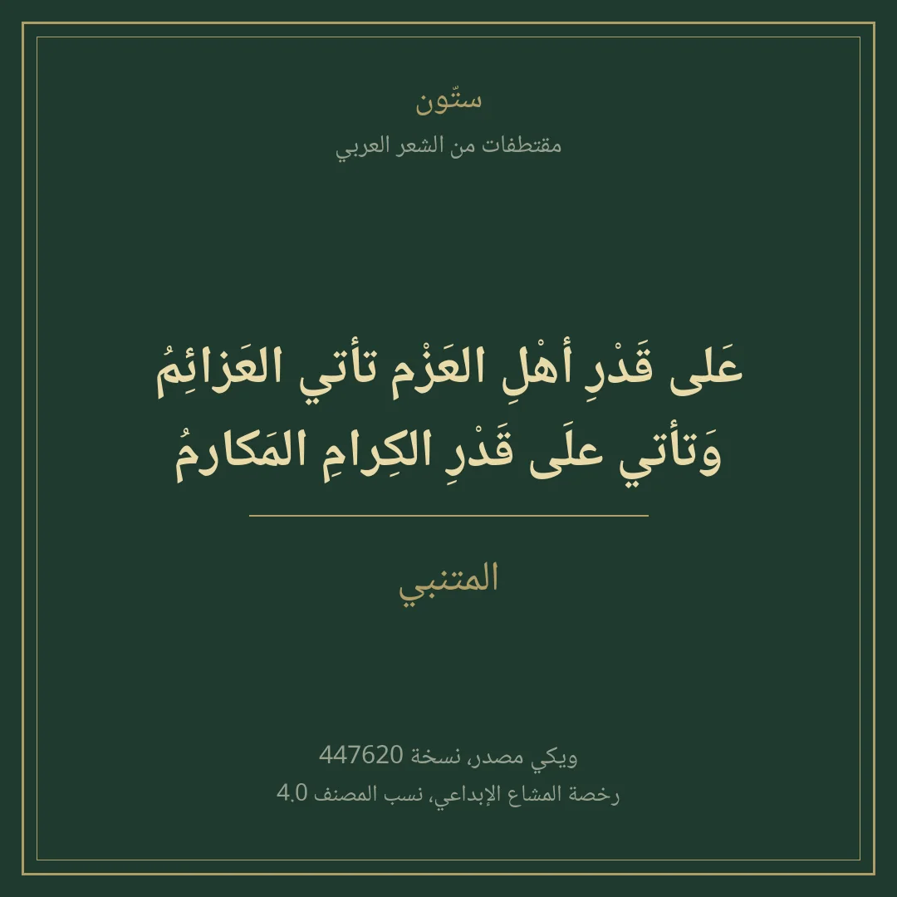
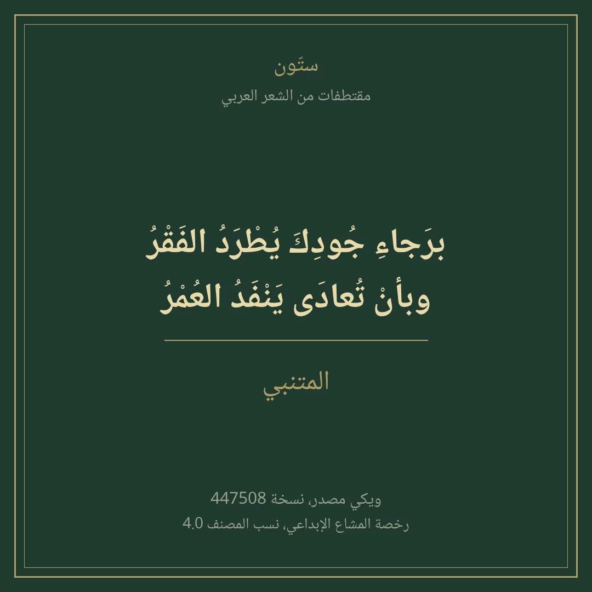
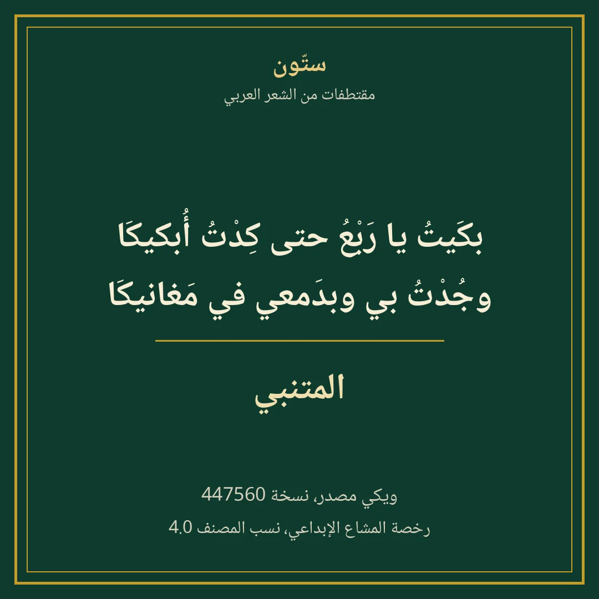
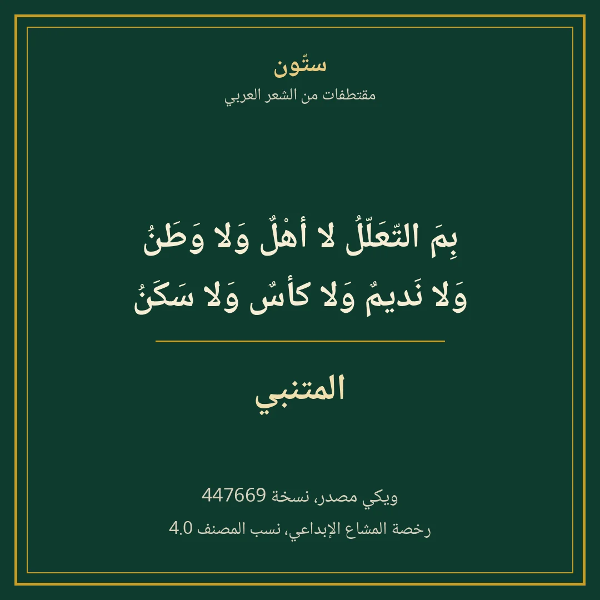
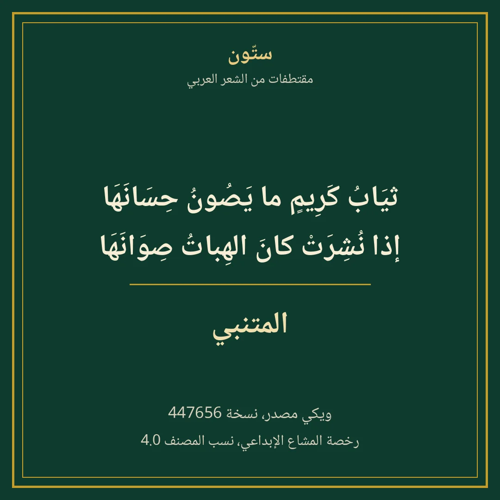
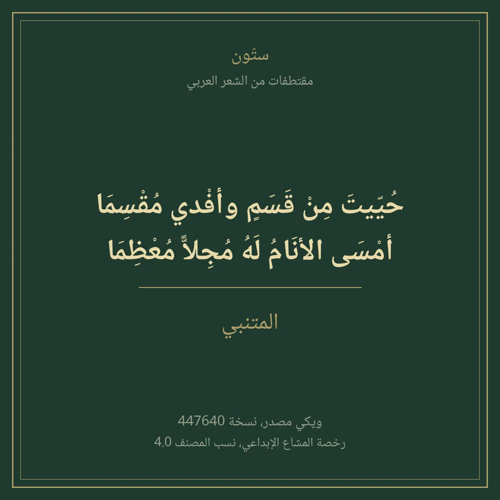

ستة أبيات من مطالع قصائد المتنبي، جاهزة للنشر على إنستغرام أو واتساب أو أي مكان: صورة مربعة، ونص قصير للنسخ، ورابط المصدر.
هذه الصفحة عيّنة مشاركة فقط، وليست جزءا من عدادات المكتبة: لا تضيف عنوانا إلى الفهرس ولا إلى قائمة الكتب المجانية، ولا تغيّر أي رقم في الموقع. الأبيات منقولة كما ظهرت في صفحات ويكي مصدر التي راجعناها، واسم الشاعر ورقم النسخة والترخيص ظاهرة مع كل بيت.

عَلى قَدْرِ أهْلِ العَزْم تأتي العَزائِمُ
وَتأتي علَى قَدْرِ الكِرامِ المَكارمُ
القصيدة: على قدر أهل العزم تأتي العزائم
المتنبي · بيت واحد من مطلع القصيدة · نسخة ويكي مصدر 447620
نص جاهز للنسخ: «عَلى قَدْرِ أهْلِ العَزْم تأتي العَزائِمُ — وَتأتي علَى قَدْرِ الكِرامِ المَكارمُ» — المتنبي. من ستّون: https://mohamadsayed7999-boop.github.io/sittoun/share.html#alaqadr
تنزيل الصورة ↗ القصيدة كاملة على ويكي مصدر ↗
النص بترخيص CC BY-SA 4.0 من ويكي مصدر العربية، وأسماء المساهمين في تاريخ الصفحة. عند المشاركة، اذكر المصدر والترخيص.

برَجاءِ جُودِكَ يُطْرَدُ الفَقْرُ
وبأنْ تُعادَى يَنْفَدُ العُمْرُ
القصيدة: برجاء جودك يطرد الفقر
المتنبي · بيت واحد من مطلع القصيدة · نسخة ويكي مصدر 447508
نص جاهز للنسخ: «برَجاءِ جُودِكَ يُطْرَدُ الفَقْرُ — وبأنْ تُعادَى يَنْفَدُ العُمْرُ» — المتنبي. من ستّون: https://mohamadsayed7999-boop.github.io/sittoun/share.html#rajaa
تنزيل الصورة ↗ القصيدة كاملة على ويكي مصدر ↗
النص بترخيص CC BY-SA 4.0 من ويكي مصدر العربية، وأسماء المساهمين في تاريخ الصفحة. عند المشاركة، اذكر المصدر والترخيص.

بكَيتُ يا رَبعُ حتى كِدْتُ أُبكيكَا
وجُدْتُ بي وبدَمعي في مَغانيكَا
القصيدة: بكيت يا ربع حتى كدت أبكيكا
المتنبي · بيت واحد من مطلع القصيدة · نسخة ويكي مصدر 447560
نص جاهز للنسخ: «بكَيتُ يا رَبعُ حتى كِدْتُ أُبكيكَا — وجُدْتُ بي وبدَمعي في مَغانيكَا» — المتنبي. من ستّون: https://mohamadsayed7999-boop.github.io/sittoun/share.html#bakayt
تنزيل الصورة ↗ القصيدة كاملة على ويكي مصدر ↗
النص بترخيص CC BY-SA 4.0 من ويكي مصدر العربية، وأسماء المساهمين في تاريخ الصفحة. عند المشاركة، اذكر المصدر والترخيص.

بِمَ التّعَلّلُ لا أهْلٌ وَلا وَطَنُ
وَلا نَديمٌ وَلا كأسٌ وَلا سَكَنُ
القصيدة: بم التعلل لا أهل ولا وطن
المتنبي · بيت واحد من مطلع القصيدة · نسخة ويكي مصدر 447669
نص جاهز للنسخ: «بِمَ التّعَلّلُ لا أهْلٌ وَلا وَطَنُ — وَلا نَديمٌ وَلا كأسٌ وَلا سَكَنُ» — المتنبي. من ستّون: https://mohamadsayed7999-boop.github.io/sittoun/share.html#bitalallul
تنزيل الصورة ↗ القصيدة كاملة على ويكي مصدر ↗
النص بترخيص CC BY-SA 4.0 من ويكي مصدر العربية، وأسماء المساهمين في تاريخ الصفحة. عند المشاركة، اذكر المصدر والترخيص.

ثيَابُ كَرِيمٍ ما يَصُونُ حِسَانَهَا
إذا نُشِرَتْ كانَ الهِباتُ صِوَانَهَا
القصيدة: ثياب كريم ما يصون حسانها
المتنبي · بيت واحد من مطلع القصيدة · نسخة ويكي مصدر 447656
نص جاهز للنسخ: «ثيَابُ كَرِيمٍ ما يَصُونُ حِسَانَهَا — إذا نُشِرَتْ كانَ الهِباتُ صِوَانَهَا» — المتنبي. من ستّون: https://mohamadsayed7999-boop.github.io/sittoun/share.html#thiyab
تنزيل الصورة ↗ القصيدة كاملة على ويكي مصدر ↗
النص بترخيص CC BY-SA 4.0 من ويكي مصدر العربية، وأسماء المساهمين في تاريخ الصفحة. عند المشاركة، اذكر المصدر والترخيص.

حُيّيتَ مِنْ قَسَمٍ وأفْدي مُقْسِمَا
أمْسَى الأنَامُ لَهُ مُجِلاًّ مُعْظِمَا
القصيدة: حييت من قسم وأفدي مقسما
المتنبي · بيت واحد من مطلع القصيدة · نسخة ويكي مصدر 447640
نص جاهز للنسخ: «حُيّيتَ مِنْ قَسَمٍ وأفْدي مُقْسِمَا — أمْسَى الأنَامُ لَهُ مُجِلاًّ مُعْظِمَا» — المتنبي. من ستّون: https://mohamadsayed7999-boop.github.io/sittoun/share.html#huyyit
تنزيل الصورة ↗ القصيدة كاملة على ويكي مصدر ↗
النص بترخيص CC BY-SA 4.0 من ويكي مصدر العربية، وأسماء المساهمين في تاريخ الصفحة. عند المشاركة، اذكر المصدر والترخيص.